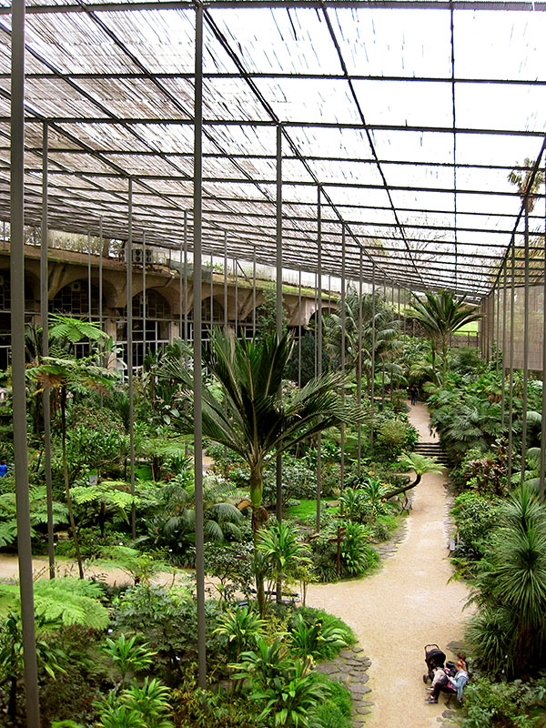
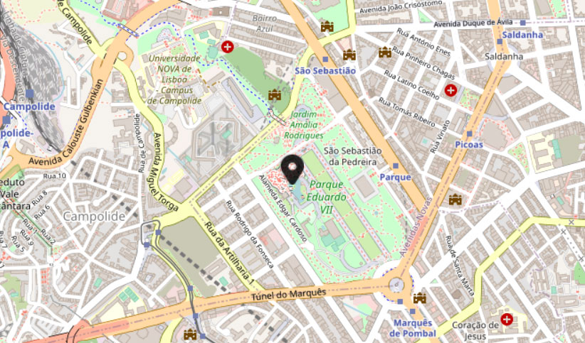

Escondido numa antiga pedreira, bem no centro de Lisboa!
A sua situação geográfica – encaixada na encosta do Parque Eduardo VII e virada a sul, associada ao clima ameno de Lisboa, possibilita condições muito favoráveis ao desenvolvimento das plantas.
Este espaço apresenta três ambiente diferentes: estufa fria, estufa quente e estufa doce. Aqui, somos convidados a conhecer mais de 300 espécies originárias dos vários continentes, como camélias e azáleas.
Nos caminhos que entrelaçam o espaço, somos acompanhados pelo som das linhas de água e de cascatas que terminam em lagos.
Como que semeados, encontramos vários elementos de estatuária, nomeadamente "Vento Garroa" de Domingos Soares Branco, "Nu de mulher" de Anjos Teixeira e "Menina calçando a meia" de Leopoldo de Almeida.

_____________
Horário
Horário de Verão
terça a domingo,
das 10h às 19h
Horário de Inverno
terça a domingo,
das 09h às 17h
Encerra à segunda-feira
Bilhetes
Simples: 3,25 €
Estudantes: 1,63 €
Aposentados: 1,63 €
Entrada gratuita
Menores de 6 anos (exclusive)
Detentores do "Lisboa card"
Grupos escolares com agendamento prévio
Pessoas portadoras de deficiência com grau de incapacidade superior a 70% e acompanhante
Público em geral aos domingos até às 14h00

Para lá chegar, dê preferência ao transporte público, a cidade e o ambiente agradecem :-)
Metropolitano: estações Parque (linha azul) e Marquês de Pombal (linha amarela), e diversas linhas de autocarros.